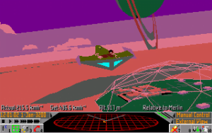
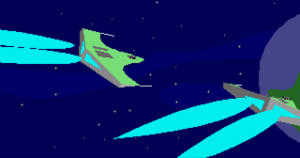
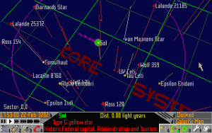
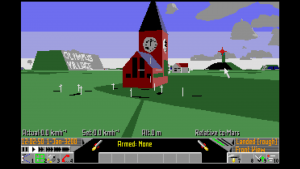
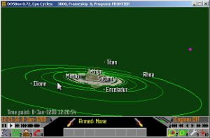
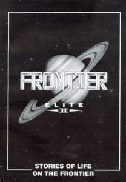
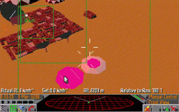
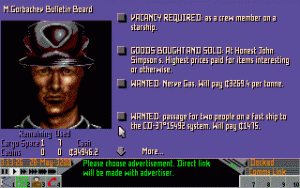

This is an archive of Drew Wagar‘s lore guide, available here with his kind permission. Drew is no longer actively maintaining his lore pages, and they may not be accurate post v2.4 of Elite Dangerous.
In this second of series of history articles, I take a look at the second game in the Elite series. Frontier Elite 2, commonly abbreviated to ‘FE2’, came along almost ten years after the original game, being published by Konami in 1993 (rights later sold to GameTek) and primarily written by David Braben, although Ian Bell provided some algorithms for drawing planets and design work on control methods.

Frontier Elite 2
Reports differ on why this didn’t come to fruition, though it seems that the 8-bit hardware was too limited and enthusiasm for the project, with other interests taking their toll on time, ultimately put paid to the work.Some work on ‘Elite 2’ had started long before this, with both Ian Bell and David Braben involved in creating a possible sequel to the original game on the BBC and C64 microcomputers in the late 1980s.
When FE2, the second game, finally did appear, it was exclusively a 16-bit affair, being made available for the major platforms of the time, the PC, the Commodore Amiga and the Atari ST. It also featured one of the most cinematic game intros that had been seen up until that point. It’s still worth watching today, to get a feel of how the game introduced itself.
Some original music, particularly the intro theme tune featured above, was composed by David Lowe. For many this is still the definitive ‘Elite’ theme. Other classical works featured in the game too.
The game featured considerable advances and changes over the original. Gone were the simplistic wireframe vector graphics, replaced by fully filled polygonal spacecraft with moving parts and articulated undercarriages.

It is very… blue, in space.
A political background was introduced, with the game having a particular date it was set in, the year 3200 (the original game had no fixed date but has been assumed to have been set in the year 3125. In FE2 you played a great-grandchild of the original player). The Federation and the Empire appeared as two galactic superpowers vying for territory, the player able to rank up with them. This was a significant departure from the original game which appeared to be set in an imaginary series of ‘galaxies’ controlled by the mysterious Galactic Cooperative or ‘Galcop’. This was, perhaps, the first major ‘retcon’ of the Elite universe.The universe was now semi-realistic, with ‘real’ stars, orbited in real-time by multiple planets simulated with real astronomical detail and a nascent 1:1 scale galaxy convincingly represented – although space had turned ‘blue’ for some reason.

The FE2 Galaxy map
FE2 also featured a game engine capable of rendering travel through astronomically accurate and realistically sized space and down to a 1:1 scale planetary surface which, though sparse in detail by today’s standards, was convincingly represented with billboards, roads, houses, mountains, clouds, craters and rivers. You could land on all planets with solid surfaces, regardless of whether they had an atmosphere or not.FE2 did include a small subset of the original game systems, collectively known as the ‘Old Worlds’. Players will still be familiar with Lave, Diso, Riedquat, Reorte and Tionisla. There are a number of others from the original game still featured in Elite Dangerous even now. This led to the lore that marked the demise of ‘GalCop’ itself, which was explained as a socio-economic collapse of that political entity sometime prior to 3200. Players had the option to start in the Lave system as in the original game, but had to pay a fine if they wanted to enter the territories of the Federation or the Empire. Another option was to start on Mars. Most players would start the game on the ice-moon Merlin in the Ross 154 system, with a basic Mk1 Eagle.

Analogue clocks were still popular in 3200 AD
Most controversially of all, the flight mechanics of the game were based upon newtonian physics rather than the traditional ‘airplanes in space’ trope common to most space flight games. This certainly gave a sense of realism, but was a controversial choice for game-play, often leading to a ‘jousting’ style of combat and a certain difficulty in flying your ship, necessitating the almost mandatory use of an autopilot for navigation and docking for most players. Alas, the autopilot was not all that reliable, meaning that a fiery death dive into a star or planet was a frequent occurrence.Various planetary and stellar types were represented, with different effects being applied to atmospheres, gas giants, and even planetary rings. The same engine was able to render a clock tower (with a working clock) at point blank range. The game also featured a sophisticated external camera.

The Orrery has yet to make a return
The player could now change their ship and many of the ships from the original game were featured, along with new ones, though only one ship could be owned at a time.The mechanics of space travel were also quite different. Gone was the space-skip or Torus drive featured in the earlier versions. Ships in FE2 travelled through space in real-time, taking days or weeks to reach their destinations. This was rendered playable by use of the ‘Stardreamer’ which accelerated time from the perspective of the player. Ships travelled in hyperspace or traditional space using their engines, accelerating and decelerating to their destination by use of their main thrusters.
Remarkably, and once again due to the magic of procedural generation, all of this was contained on a single floppy disk (around 720 kilobytes on the PC version). The game originally being written in 250,000 lines of 68000 assembly code (native for the Amiga and ST) and ported to the 80286 processor for the PC by Chris Sawyer (Anyone familiar with these two processor architectures will appreciate the herculean task involved!). The game taxed those early machines, with performance being quite poor on the early iterations, particularly on the Amiga and ST, though later editions of the hardware solved this successfully. The Amiga version had the virtue of the best music rendition and sound effects.

Stories of life on the Frontier
Once again the game was accompanied by works of fiction, a collection of short works entitled “Stories of life on the Frontier.” and a gazetteer of particular worlds.
There was also an interesting flaw, the so-called ‘wormhole’ bug. Due to a miscalculation of jump range, the player could jump multiples of 655.35 lightyears without using additional fuel. By clever triangulation, vast distances could be covered by judicious plotting.

Thargoid ships at a military base…
There were some curious omissions too. The ubiquitous bad guys, the Thargoids, were almost totally absent from the game and none of the original mysteries such as Raxxla and the Dark Wheel were expanded upon.
Whilst the open ended nature of the game was true to the original, there were no obvious scripted missions present in the game, though there were various simple missions ranging from assassination contracts, passenger missions, to military photographic reconnaissance.

The FE2 BBS
These missions were given by ‘photofit’ style individuals, and the player had a series of prompted responses they could give to queries. Also introduced were new bits of technology such as the ‘hyperspace analyser’ allowing you to track ships and intercept them at their destinations.
Most reviews of the game were positive, with many citing the scale, realistic physics and sheer ambition of the game. A few commented to the effect that gameplay was ‘boring’ as a result of the newtonian mechanics. Certainly some of the visceral nature of the combat from the original game was missing, though it definitely has its loyal fans. Somewhere near 500,000 copies were sold. For many players this was their ‘first’ Elite.
It would be followed by another sequel within two years…